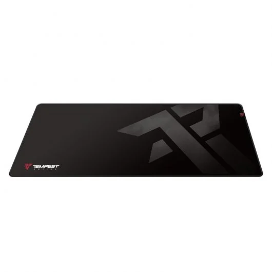

Alfombrilla Tempest  No seleccionar Seleccionar (+14.99€)
· Sensor HERO: El sensor HERO de próxima generación ofrece un seguimiento de precisión de hasta 25.600 dpi, sin suavizado, aceleración ni filtros. ·11 botones programables: 11 botones programables y botón rueda con dos modos y desplazamiento superrápido que te dan un control totalmente personalizable de tu forma de jugar. ·Sistema de pesas ajustable: Se pueden usar hasta cinco pesas de 3,6 g para personalizar la configuración del peso y del equilibrio. ·Tecnología LIGHTSYNC: La tecnología Logitech G LIGHTSYNC proporciona iluminación RGB totalmente personalizable que también se sincroniza con tus juegos. ·Sistema de botones de tensión de resortes e interruptores mecánico: Los botones izquierdo y derecho del ratón tienen incorporado un sistema de tensión.
·Especificaciones físicas -Altura: 132 mm -Anchura: 75 mm -Profundidad: 40 mm -Peso: 121 g, sólo ratón -Pesos adicionales opcionales: hasta 18 g (5 x 3,6 g) -Longitud de cable: 2,10 m ·Seguimiento -Sensor: HERO™ -Resolución: 100 - 25.600 dpi -Sin suavizado/aceleración/filtros -Aceleración máx.: > 40 G2Pruebas realizadas sobre alfombrilla de ratón Logitech G240 para gaming -Velocidad máx.: > 400 ips3Pruebas realizadas sobre alfombrilla de ratón Logitech G240 para gaming ·Respuesta -Formato de datos USB: 16 bits/eje -Velocidad de respuesta USB: 1000 Hz (1 ms) -Microprocesador: 32 bits ARM ·Durabilidad -Botones principales: 50 millones de clics -Pies de PTFE: 250 km4Pruebas realizadas sobre alfombrilla de ratón Logitech G240 para gaming ·Otras funciones -Memoria integrada: 5 perfiles -RGB LIGHTSYNC: 1 zona ·Requisitos -Windows® 7 o posteriores -macOS 10.11 o posterior -Chrome OS™ -Puerto USB -Conexión a Internet para Logitech Gaming Software (opcional)